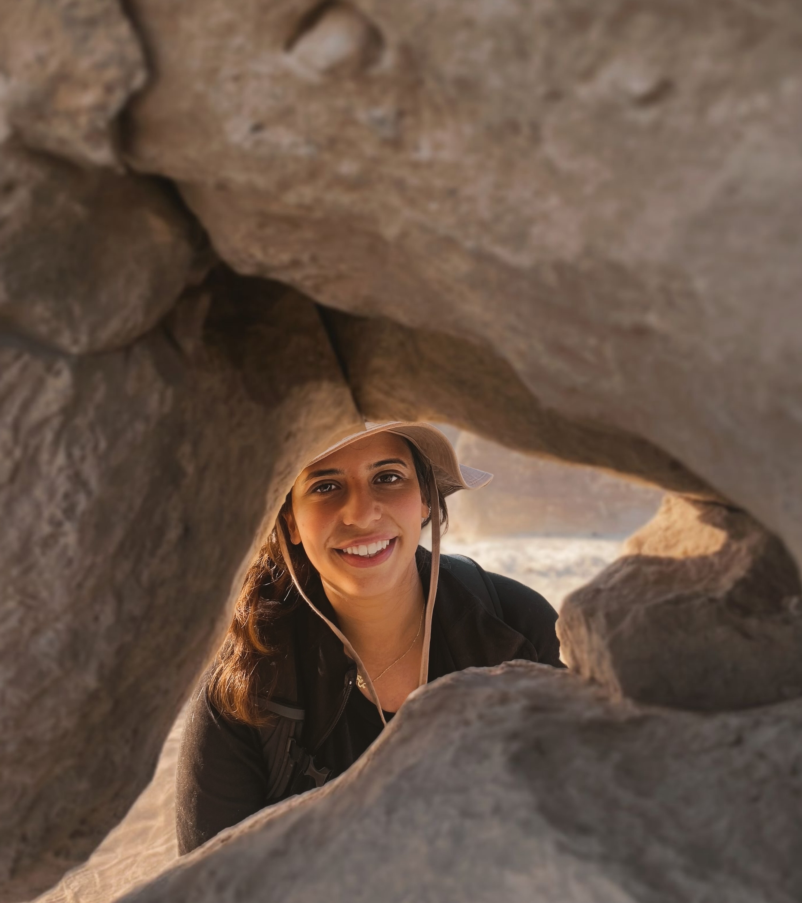
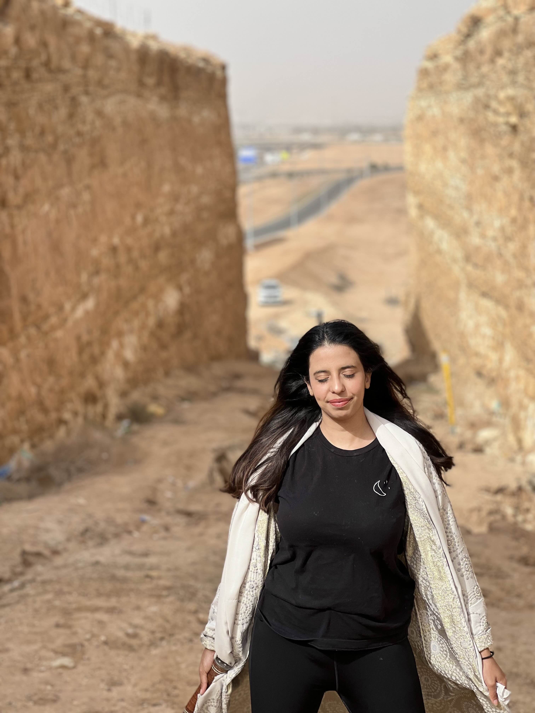

Hi. I'm
The ocean's past is a warning we haven't finished reading.
Earth's oceans have faced catastrophe before. I'm a quantitative paleobiologist tracking how environmental change reshapes ocean life and biodiversity across space and time. My work is inherently interdisciplinary: I blend physiology, geology, Earth system modeling, oceanography, and data science to understand the tipping points between extinction and endurance.
To my knowledge, I am the first female Saudi paleontologist.
One of my goals is student outreach within paleontology, so that everyone feels like they belong! I also draw digitally and with charcoal, and I'm writing a high fantasy novel woven through with biology and geology. I build fantasy worlds out of the same material I study: deep time, ocean life, and what survives!

Postdoctoral Fellow
Virginia Tech · Dr. Pedro Monarrez Lab

I study how ocean life survives Earth's worst catastrophes in deep time. I aim to understand what traits tip the balance between extinction and endurance by using physiology, ocean conditions, and evolutionary history to explain who survives global crises and how.
For my postdoc, I use statistical modeling alongside Late Pleistocene and Holocene fossils to reconstruct what ocean communities looked like before humans started degrading them, building a data-driven baseline for understanding extinction drivers.
Many marine ecosystems were already unrecognizable by the time modern ecology arrived to study them. The fossil record is how we recover that baseline.
You can't measure loss without knowing what was there before. The fossil record is that baseline.
Answering deep-time questions requires pulling from biology, geology, oceanography, and computational science, all at once.
I use biogeographic similarity measures like Jaccard and construct equal-area hexagonal grids to track how global marine community composition has changed through time. Large fossil occurrence databases let me pull community-level signals from deep time and turn them into statistically tractable narratives about survival, diversity, and collapse.
Fusing paleontology with marine biology, physical oceanography (oxygen, temperature, pH proxies), and ecology. My dissertation linked biogeographic patterns to extinction physiology and climate change; my postdoc extends this to invasive species and metabolic index modeling across the past ~125k years to the present.
Reading rock sequences in the field to reconstruct ancient environments, collecting specimens, and systematically identifying fossils to build the primary datasets that everything else depends on. The numbers only mean something if you know what you're counting.
Translating high-dimensional paleontological datasets into accessible visual narratives for scientific publication, public outreach, and policy-relevant storytelling. Fluent in R, Quarto, learning Python, and custom web-based visualization.
My Ph.D. defense flyer, illustrated by me.
One of my goals is student outreach within paleontology, so that everyone feels like they belong.
![]()